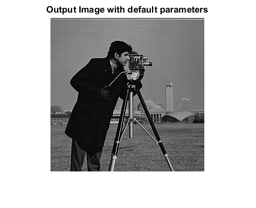
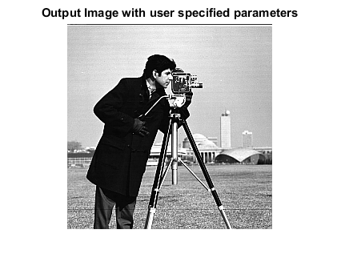
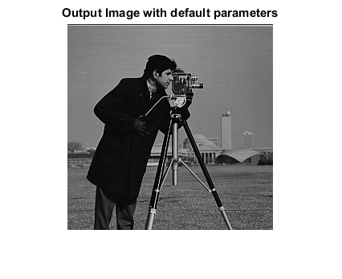
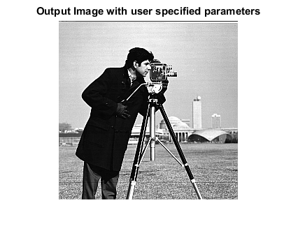

UNSHARP_CVIP
unsharp_cvip() - Unsharp masking of an image.
Contents
SYNTAX
outImage = unsharp_cvip( inImage, shrinkRange, cutoffLim)
Input Parameters include :
- inImage - 1-band input image of MxN size or 3-band input image of MxNx3 size.The input image can be of uint8 or uint16 or double class.
- shrinkRange - Histogram shrink range. A vector of length 2. shrinkRange(1):lower limit shrinkRange(2):upper limit ([0 100] | default)
- cutoffLimt - Percentage of low and high values to clip during hist_stretch. A vector of length 2. cutoffLim(1): low_clip cutoffLim(2): high_clip ([0 0] | default)
Output Parameter includes :
- outImage - Output image
DESCRIPTION
The function performs the unsharp masking of an input image. Unsharp masking is a technique that combines filtering and histogram modification. The input image is lowpass filtered using 3x3 arithmetic mean filter; a histogram shrink is then performed on the filtered image. The resultant image is subtracted from the original, and a histogram stretch completes the process. The histogram stretch range is 0 to 255, (considering 8-bit image).
REFERENCE
1. Scott E Umbaugh. DIGITAL IMAGE PROCESSING AND ANALYSIS: Applications with MATLAB and CVIPtools, 3rd Edition.
EXAMPLE
% Read Image I = imread('cam.bmp'); % unsharp masking image with default parameters O1 = unsharp_cvip(I); % unsharp masking with user specified parameters O2 = unsharp_cvip(I,[2 120], [0.025 0.025]); % Display input image figure;imshow(I);title('Input Image'); % Display output image figure; imshow(O1,[]);title('Output Image with default parameters'); figure; imshow(O2,[]);title('Output Image with user specified parameters');
  
  CREDITS
Author: Norsang Lama, April 2017
Copyright © 2017-2018 Scott
E Umbaugh
For updates visit CVIP Toolbox Website